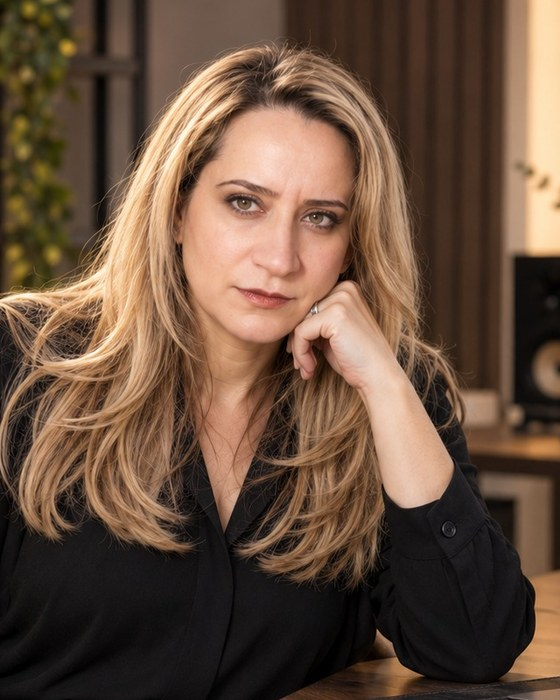

İşletmenizin Süper Zekâ Çalışma Sistemi
Çoklu uzmanlık. Tek koordinasyon. İnsan kontrolü. Ölçülebilir değer.
İşletmenizi dinleyen, ihtiyaçlarını analiz eden, alternatifleri araştıran ve size özel çözümler geliştiren dijital yönetim ve üretim altyapısı. Uzman ajanlar projelerinizi planlar, iş akışlarınızı destekler ve sonuçları ölçmenize yardımcı olur. Kritik adımlar sizin onayınızla ilerler.
Panel tasarımından örnek görünüm; temsili veridir, gerçek bir müşteriye ait değildir. Sonuç sizin işinize göre: kayıt, rezervasyon, sözleşme ya da satış.
Kendi işletmemizden ölçülen değerler · 2 Kasım 2026. Nasıl ölçtüğümüzü görün.
Modül değil, işinizin sorunu ile başlarız.
Sektörünüzü seçin: bugün yaşadığınız sorun, Core'un bunu nasıl ele aldığı ve sonucu neyle ölçeceğimiz yan yana. Rakam sözü vermeyiz; ölçütü işe başlamadan birlikte yazarız.
Eğitim kurumu
Sunuluyor · ilk kurulum 2026 sonbaharı- Başvurular formdan, WhatsApp'tan, telefondan ve reklamdan ayrı ayrı geliyor; geç dönülen aday başka kuruma gidiyor.
- Reklama harcanan paranın kaç kayda dönüştüğü bilinmiyor.
- Veli ve aday takibi, hatırlatmalar elle ve kişinin hafızasında.
- Başvuru hattı: programa özel sayfa, kısa form, WhatsApp düğmesi
- Karşılama ve takip: tek aday defteri, her sabah dönülecekler listesi, 5. ve 10. gün hatırlatmaları
- Reklam ve sosyal medya: içerik takvimi, her reklama kaynak etiketi
- Raporlama: başvurudan kesin kayda haftalık huni
- Başvurudan ilk dönüşe geçen süre
- Başvuru → görüşme → ön kayıt → kesin kayıt oranları
- Kanal başına aday ve kayıt maliyeti
İlk 30 günde başlangıç değerlerinizi ölçer, 90. günde aynı ölçüyle karşılaştırırız.
Restoran ve kafe
Sunuluyor · yerel görünürlük modülü pilot- Hafta içi masalar boş; rezervasyon telefonda kaçıyor, kaydı tutulmuyor.
- Haritalarda ve aramalarda geride kalıyorsunuz, yorum sayısı az.
- Sosyal medya düzensiz; hangi paylaşımın müşteri getirdiği belli değil.
- Rezervasyon ve talep hattı: WhatsApp ve kısa form, her talep defterde
- Yerel görünürlük: işletme profili düzeni, izinli yorum isteme akışı
- Sosyal medya: haftalık menü ve etkinlik içeriği, onayınızla yayın
- Raporlama: haftalık talep, kaynak ve dönüş özeti
- Haftalık rezervasyon talebi ve nereden geldiği
- Talebe dönüş süresi
- Yorum sayısı ve puanındaki değişim
İlk 30 günde başlangıç değerlerinizi ölçer, 90. günde aynı ölçüyle karşılaştırırız.
Mimarlık ve yapı
Kendi ofisimizde kullanılıyor- Keşif ve teklif süreci uzun; talepler, revizyonlar ve teklifler dağınık.
- Müşteriye sunum hazırlamak günler alıyor.
- Proje kararları ve geçmiş, onu bilen kişiyle birlikte gidiyor.
- Talep defteri: siteden ve reklamdan gelen her talep, kimde ve hangi aşamada
- Teklif ve sunum: metraj, kapsam, fiyat tablosu ve kurumsal kimlikte teklif dosyası
- Mimari görselleştirme: projeyi yapılmadan gösteren görsel ve seçenek karşılaştırması
- Kurum hafızası: proje kararları kayıtlı; mimari karar her zaman mimarda
- Talepten keşfe, keşiften teklife geçen süre
- Teklifin sözleşmeye dönme oranı
- Teklif başına revizyon sayısı
İlk 30 günde başlangıç değerlerinizi ölçer, 90. günde aynı ölçüyle karşılaştırırız.
Medya ve içerik
Kendi işimizde kullanılıyor- Düzenli içerik üretmek ve yayın akışını sürdürmek ekibi yoruyor.
- Başlık, kapak, açıklama her seferinde elle hazırlanıyor.
- Eser ve içerik sahipliğinin kanıtı dağınık.
- Yayın otomasyonu: 7/24 akış, program düzeni, arıza bekçileri
- Video ve görsel üretim: kısa video, kapak, altyazı ve kalite ölçümü
- Çok dilli içerik: aynı içeriğin Türkçe, İngilizce, İspanyolca sürümü
- Telif ve belge kaydı: parmak izi ve Bitcoin zaman damgası
- Yayında kalma süresi ve kesinti sayısı
- İçerik başına hazırlık süresi
- İzlenme ve dinlenme süresi
İlk 30 günde başlangıç değerlerinizi ölçer, 90. günde aynı ölçüyle karşılaştırırız.
Hizmet işletmesi
Sunuluyor- Randevu ve talepler kayboluyor; kimin döneceği belli değil.
- İlk işten sonra müşteriyle bağ kopuyor, tekrar gelmiyor.
- Ne kadar talep aldığınızı ve nereden geldiğini bilmiyorsunuz.
- Randevu ve talep hattı: WhatsApp ve kısa form, her talep defterde
- Karşılama ve takip: günlük dönülecekler listesi, hatırlatma metinleri
- E-posta bülteni: yalnız açık izin verenlere düzenli temas
- Raporlama: talep, kaynak ve sonuç tablosu
- Talep sayısı ve kaynağı
- Talebin randevuya ya da satışa dönme oranı
- Tekrar gelen müşteri oranı
İlk 30 günde başlangıç değerlerinizi ölçer, 90. günde aynı ölçüyle karşılaştırırız.
Sektörünüz burada yoksa da başlangıç aynıdır: ücretsiz keşif görüşmesinde işinizin bugün nasıl yürüdüğünü dinler, sorunu birlikte tanımlarız.
Çoğu işletmenin ihtiyacı dört başlıkta toplanır.
Her biri birkaç modülün birlikte çalışmasıdır. Yanında gerçek durumunu yazıyoruz; henüz çalışmayan bir özelliği çalışıyormuş gibi satmayız.
Müşteri kazanım hattı
Reklamı ve içeriği gören kişinin başvurusundan sonucuna kadar her adım tek düzende.
- Başvuru / talep sayfası, kısa form, WhatsApp hattı
- Tek defter, günlük dönülecekler listesi, hatırlatmalar
- Reklam ve sosyal medya, kaynağıyla ölçülür
- Kayıt, rezervasyon ya da satışa kadar huni raporu
Teklif ve iş takibi
Talepten keşfe, tekliften sözleşmeye; Aşkın İnşaat Mimarlık Yapı'nın kendi işleyişinde kullandığı düzen.
- Gelen her talep kimde, hangi aşamada
- Metraj, kapsam ve fiyat tablosunda ajan desteği
- Kurumsal kimlikte teklif ve sunum dosyası
- Rakamların dayanağı ayrıca tutulur
İçerik ve yayın üretimi
Aura Sonic'in dört radyo kanalını ve kataloğunu yöneten üretim ve yayın hattı.
- Kısa video, kapak, görsel ve çok dilli metin
- Yayın akışı, paketleme ve arıza bekçileri
- Onaylamadığınız içerik yayına çıkmaz
- Eser sahipliği kaydı ve zaman damgası
Yönetim raporu ve kurum hafızası
Kararlar kanıtla masanıza gelir; bilgi kişide değil kurumda kalır.
- Haftalık özet ve aylık yönetim raporu, kaynaklı
- Mevcut durum ve rakip ölçümü
- Karar ve kural kaydı; iş kaldığı yerden sürer
- Ölçülemeyen ayrıca belirtilir
Yapay zekâyı değil, işinizin sonucunu konuşuruz.
Çoğu işletmede sorun teknoloji eksikliği değildir; başvurunun cevapsız kalması, reklam parasının nereye gittiğinin bilinmemesi, aynı işin her gün elle yeniden yapılmasıdır. Core bu yükleri alır, kararı size bırakır.
Hiçbir başvuru cevapsız kalmaz
Formdan, WhatsApp'tan, telefondan ve reklamdan gelen herkes tek defterde toplanır. Kime, ne zaman dönüleceği her sabah önünüzdedir.
Bugün: mesajlar farklı telefonlarda, takip kişinin hafızasında.
Reklam bütçesi ölçüye bağlanır
Hangi kanalın gerçekten müşteri ya da kayıt getirdiğini görürsünüz. Beğeni ve gösterim değil; başvuru, görüşme ve sonuç sayılır.
Bugün: harcama belli, karşılığı belirsiz.
Tekrarlayan iş ekibinizin üstünden kalkar
Günlük liste, hatırlatma metni, haftalık özet, içerik taslağı ajanlar tarafından hazırlanır. Ekibiniz hazırlamaz; okur, düzeltir, onaylar.
Bugün: nitelikli insanlar tekrar işine saat harcıyor.
Kararlar masanıza kanıtla gelir
Her rapor kaynağını gösterir: hangi veriden, hangi tarihte, kim tarafından. Ölçülmeyen sonuç rapora girmez.
Bugün: "iyi gidiyor" ile "ölçtük, şu kadar" arasındaki fark.
Bilgi kişide değil kurumda kalır
Kurallarınız, kararlarınız ve iş geçmişiniz kayıtlıdır. Bir çalışan ayrıldığında ya da bir yazılım değiştiğinde iş kaldığı yerden sürer.
Bugün: süreç, onu bilen kişiyle birlikte gidiyor.
Kontrol sizde kalır
Müşteriye giden mesaj, yayın, ödeme gibi kritik adımlar onay kutunuza düşer. Onaylamadığınız iş tamamlanmaz; kimin neyi onayladığı kayıtlıdır.
Bugün: ya her şeyi siz yapıyorsunuz ya da kontrolsüz gidiyor.
Size uygunsa
- Düzenli başvuru, aday ya da müşteri talebi alıyorsanız
- Takip, hatırlatma ve raporlama elle yürüyorsa
- Reklama para harcıyor ama sonucunu ölçemiyorsanız
- Karar verecek ve onaylayacak bir yetkiliniz varsa
Henüz uygun olmayabilir
- "Tek tuşla, insansız, her şeyi yapan" bir sistem arıyorsanız
- Başvuruları karşılayacak bir sorumlu ayıramıyorsanız
- Sonucu ölçmek için gereken veriyi paylaşmak istemiyorsanız
- Garantili satış ya da kayıt sayısı bekliyorsanız
Sonuç sözü vermeyiz. Ölçütü işe başlamadan birlikte yazar, ilk 30 günde gerçek başlangıç değerlerinizi ölçer, sonrasını o değerlere göre değerlendiririz.
Nasıl Çalışıyoruz?
Her işletmenin ihtiyacı farklıdır. Önce hedefi ve mevcut durumu birlikte netleştirir, ardından seçenekleri, maliyeti ve başarı ölçülerini karşılaştırırız. Uygulama kararları sizin onayınızla ilerler.
Keşif
İhtiyacınızı ve hedeflerinizi dinleriz.
Analiz
İş akışlarını, verileri ve uygun seçenekleri inceleriz.
Plan ve Fizibilite
Risk, maliyet ve beklenen değeri birlikte değerlendiririz.
Onay
Önemli karar ve erişimler siz onay vermeden uygulanmaz.
Kontrollü Uygulama
Uygun kapsamda pilot veya aşamalı çözüm geliştiririz.
Ölçüm ve Doğrulama
Çıktıyı, görev kayıtlarını ve sonuçları gerçek verilerle kontrol ederiz.
İyileştirme
Bulgulara göre sistemi birlikte geliştiririz.
İlk hafta
- Yetkiler ve erişimler tanımlı
- Başvuru hattı deneme ortamında
- Test başvurusu uçtan uca izlenmiş
Birinci ay
- Gerçek başlangıç değerleri ölçülmüş
- İlk dönüş süresi ve kanal dökümü
- Hedefler bu değerlere göre yazılmış
Üçüncü ay
- Başvuru → görüşme → sonuç tablosu
- Sonuç başına toplam maliyet
- Devam, düzelt ya da durdur kararı
Ajanlarınızın işi, her sabah önünüzde.
Kayıt, takip, içerik ve rapor tek düzende yürür. Aşağıdaki görünümler, bir eğitim kurumu için tasarlanan öğrenci kazanım hattından örnektir.
| Aday | Program | Kaynak | Son temas | Sonraki adım |
|---|---|---|---|---|
| Aday A17 yaş · velisi kayıtlı | İç Mimarlık | Web formu | dün 18:42 | İlk dönüş · bugün |
| Aday BLise 3 | Güzel Sanatlara Hazırlık | 9 Eki | 5. gün hatırlatma | |
| Aday CÜniversite 2 | Moda Tasarımı | Instagram reklam | 13 Eki | Tanışma · Cmt 11:00 |
| Aday DMezun | Portfolyo Hazırlama | Google arama | 4 Eki | 10. gün son hatırlatma |
| Aday ELise 2 · velisi kayıtlı | Desen ve Yağlı Boya | Tavsiye | 12 Eki | Fiyat bilgisi gönder |
| Aday FÇalışan | 2D ve 3D Tasarım | Web formu | 11 Eki | Ön kayıt · belge bekliyor |
Merhaba, geçen hafta Güzel Sanatlara Hazırlık programımızı sormuştunuz. Cumartesi 11:00'deki ücretsiz tanışma dersimize sizi de bekleriz; uygunsanız yerinizi ayıralım.
| Kanal | Aday | Ort. dönüş | Görüşme | Kayıt | Aday başı maliyet |
|---|---|---|---|---|---|
| Instagram reklam | 124 | 1 sa 40 dk | 52 | 16 | ₺210 |
| Google arama | 78 | 55 dk | 41 | 15 | ₺265 |
| Web formu | 56 | 2 sa 10 dk | 24 | 8 | — |
| 38 | 18 dk | 17 | 5 | — | |
| Tavsiye | 16 | 35 dk | 7 | 2 | — |
Pzt
Sal
Çar
Per
Cum
Cmt
Paz
| Saat | Ajan | İşlem | Onay | Kayıt özeti |
|---|---|---|---|---|
| 08:00 | Karşılama | Günlük liste üretildi (6 aday) | Gerekmez | a91f…c204 |
| 08:02 | Karşılama | 3 hatırlatma metni hazırlandı | Bekliyor | 5d0e…77ab |
| 09:14 | Yetkili | 2 mesaj onaylandı | Onaylandı | e3c8…1f90 |
| 10:30 | İçerik | Çarşamba reklam metni (3 varyasyon) | Bekliyor | 07b2…d61e |
| 11:05 | Rapor | Haftalık özet hazırlandı | Gerekmez | c4aa…93f1 |
Önce kendi işimizde kullandık.
İlk müşteri kurulumlarımız 2026 sonbaharında başlıyor. Bu yüzden size bir referans listesi değil, kendiniz denetleyebileceğiniz bir şey gösteriyoruz: aynı altyapıyla yönettiğimiz kendi işimiz.
Kanal, gece gündüz yayında
Aura Sonic'in Türkçe, Global Hits, Latino ve Global Slow radyoları YouTube'da kesintisiz yayın yapıyor. Program akışı, kapak, başlık ve arıza takibi bu altyapıyla yürüyor.
Canlı yayınları açın →Eser, tek tek kayıtlı
Kataloğumuzdaki her eserin parmak izi alınır; listenin tamamı Bitcoin blok zincirine zaman damgasıyla işlenir. Sahipliği kimseye güvenmeden herkes doğrulayabilir.
Telif kayıt sayfası →İşlem, silinemez defterde
23 Ağustos 2026'dan beri ajanların ve yöneticilerin her işlemi kayıt altında. Kayıt silmek ya da değiştirmek teknik olarak engelli; bu engel 12 Ekim 2026'da denenerek doğrulandı.
Güvence düzeni →Söylenene değil, kanıta dayanır.
Eksik bilgiyi sorgular, gerekli belgeyi ister, planı ve sonucu karşılaştırır. Görevleri tamamlandı varsaymak yerine doğrulanabilir çıktılar ve izlenebilir karar kayıtları sunmayı hedefler.
Kanıt ister.
İnsan onayıyla ilerler.
Burada müşteri logosu, "yüzde şu kadar artış" gibi bir oran ya da referans cümlesi görmeyeceksiniz; çünkü henüz yayımlayabileceğimiz ölçülmüş bir müşteri sonucumuz yok. Olduğunda, müşterinin yazılı izniyle ve ölçüm yöntemiyle birlikte burada yer alacak.
Yetki vermek, kontrolü bırakmak değildir.
Her ilkenin karşısında bugünkü gerçek durumu yazıyor. "Kurulu" dediğimiz, çalışan ve denenmiş olandır.
| İlke | Nasıl sağlanıyor | Durum |
|---|---|---|
| Son söz sizde | Müşteriye giden mesaj, yayın, ödeme ve erişim değişikliği gibi kritik adımlar onayınız olmadan tamamlanmaz. | Çalışma kuralı |
| Her işlem kayıtlı | Kim, neyi, ne zaman, kimin onayıyla yaptı. Kayıt defterinde silme ve değiştirme teknik olarak engelli. | Kurulu |
| Ajan kendi yetkisini artıramaz | Yönetici ajanların kimliği ve yetkisi, iki insan yöneticinin onayı olmadan değiştirilemez. | Kurulu |
| Kanıtsız başarı yok | "Yapıldı" demek için çıktı, kayıt ve doğrulama gerekir. Her ajan canlıya çıkmadan deneme ortamında ölçütü geçer. | Kurulu |
| Hesaplarınız sizde | Site, sosyal medya ve reklam hesapları kurumunuz adına kalır; bize adlı ve sınırlı erişim verilir, iş bitince kapatılır. | Çalışma kuralı |
| Size özel alan | Her müşterinin verisi, hafızası ve anahtarları ayrı tutulur; başka müşteriyle paylaşılmaz. | İlk kurulumla devrede |
| İş bitince durur | Ajan kendine görev üretmez; verilen iş bitince bekleme moduna geçer, yeni iş için yetkili onayı bekler. | Geliştiriliyor |
| Bağımsız zaman damgası | Kayıt defterinin günlük özetinin, eser kataloğumuzda kullandığımız yöntemle blok zincirine işlenmesi. | Yol haritası |
Kişisel veriler
Veri sizin, sorumluluk paylaşılmış
Aday ve müşteri verilerinizde veri sorumlusu sizsiniz; biz yazılı bir veri işleme çerçevesiyle, yalnız iş için gereken kadarını işleriz.
Yapay zekâ modelleri
Veriniz model eğitmez
Verileriniz başka müşterilerin işinde ya da bir yapay zekâ modelini eğitmek için kullanılmaz. Hangi modelin hangi işte kullanıldığı raporda yazar.
Ayrılırken
Her şey sizde kalır
Hesaplar, sayfalar, başvuru kayıtları ve raporlar kurumunuzda kalır. Erişimlerimiz kapatılır, kapatıldığı tutanakla bildirilir.
Ayrıntı için Gizlilik ve kişisel veriler sayfasına bakın.
Çözümlerin altındaki yirmi dört modül.
Core tek parça bir yazılım değildir; birbirine bağlanan modüllerden oluşur. İhtiyacınız olanla başlar, gerisini sonra eklersiniz. Her modülün yanında bugünkü gerçek durumu yazar.
24 modülün tamamını gör
Müşteri kazanımı
Doğru kişiyi bulmak, başvuruya çevirmek, takip etmek.Başvuru hattı
Reklamı ve içeriği gören kişinin tek dokunuşla başvurduğu sayfa ve form düzeni.
- Programa / hizmete özel başvuru sayfası
- Kısa form, WhatsApp ve arama düğmeleri
- Her başvuruya numara, saat ve kaynak
Reklam
Bütçeyi beğeniye değil sonuca bağlar: her kampanyanın getirdiği başvuru ve kayıt izlenir.
- Instagram / Facebook ve Google Arama kurulumu
- Reklama kaynak etiketi, haftalık bütçe önerisi
- Başvuru başı ve kayıt başı maliyet
Sosyal medya
Kurumunuzun diliyle düzenli içerik: plan, metin, kısa video kurgusu ve onay akışı.
- Haftalık içerik takvimi ve metinler
- Ham çekimden Reels / Shorts kurgusu
- Onaylamadığınız içerik yayına çıkmaz
Karşılama ve takip
Gelen her başvurunun kimde, hangi aşamada olduğu bellidir; kimse unutulmaz.
- Tek aday / müşteri defteri
- Her sabah “bugün dönülecekler” listesi
- 5. ve 10. gün hazır hatırlatma metinleri
Yerel görünürlük
Haritalarda ve yerel aramalarda bulunmak; yorumların düzenli toplanması.
- İşletme profili denetimi ve düzeni
- Yorum isteme akışı (izinli)
- Yerel arama sırası ölçümü
E-posta bülteni
İlgilenen ama henüz karar vermeyen kişilerle izinli, düzenli temas.
- Kayıt sayfası ve hoş geldin dizisi
- Aylık bülten taslağı
- Yalnız açık izin verenlere gönderim
Üretim
İçeriği, sunumu ve yayını çıkaran atölye.Video ve görsel üretim
Kısa video, kapak ve tanıtım görseli üretim hattı; yayınlarımızın arkasındaki düzen.
- Kısa video kurgusu, altyazı, kapak
- Marka şablonları ve künye damgası
- Yayın öncesi kalite ölçümü
Web sitesi
Mevcut sitenizi yenilemeden güçlendirir; gerekiyorsa sade ve hızlı yeni sayfa kurar.
- Sayfa, form ve hız iyileştirmesi
- Telefon ekranı ve erişilebilirlik denetimi
- Ölçüm altyapısı (izinli)
Teklif ve sunum
Keşiften teklife: metraj, kapsam, fiyat tablosu ve müşteriye sunulacak dosya.
- Kapsam ve kapsam dışı açık yazılır
- Kurumsal kimliğe uygun PDF / sunum
- Rakamların dayanağı ayrıca tutulur
Yayın otomasyonu
Kesintisiz yayın yapan kanallar için program akışı, paketleme ve arıza bekçileri.
- 7/24 yayın ve otomatik program akışı
- Başlık, kapak, açıklama düzeni
- Kesinti ve arıza uyarıları
Radyo ve sponsorluk
Aura Sonic'in 7/24 yayınlarında marka görünürlüğü ve markaya özel ses.
- Radyo yayınında sponsor yerleşimi
- Markaya özel cıngıl / tanıtım sesi
- Yayın sonrası gösterim raporu
Çok dilli içerik
Aynı içeriğin Türkçe, İngilizce ve İspanyolca sürümleri; yayınlarımızda her gün kullanılan düzen.
- Başlık, açıklama ve sayfa metinleri
- Dile göre ayrı yayın ve kitle
- Anlamı koruyan uyarlama, kelime çevirisi değil
Oyun ve etkileşimli hikâye
Markanızın dünyasını oynanır kılan seçimli hikâye oyunları; kendi oyunumuz KULİS böyle yapıldı.
- Senaryo, görsel ve müzik tek pakette
- Tarayıcıda çalışır, kurulum istemez, iki dilli
- Oynanma ve seçim ölçümü
Müzik ve ses üretimi
Markaya özel müzik, cıngıl ve seslendirme; 2.400'den fazla eserlik kataloğun arkasındaki atölye.
- Markaya özel cıngıl ve tanıtım müziği
- Seslendirme ve anons
- Eser sahipliği kayıt altında teslim
Mimari görselleştirme
Projeyi yapılmadan gösteren görsel ve sunum; mimarlık ofisimizin günlük işi.
- Üç boyutlu model ve görsel
- Müşteri sunumu ve seçenek karşılaştırması
- Mimari karar her zaman mimarda
Yönetim ve güvence
Kararı kanıta, işi kayda bağlayan zemin.Raporlama
Haftalık özet ve aylık yönetim raporu; her rakamın kaynağı gösterilir.
- Başvuru → görüşme → sonuç tablosu
- Kanal ve program bazında döküm
- 90 günlük sonuç dosyası
Araştırma ve rakip analizi
Karar öncesi ölçüm: sitenizin, başvuru yolunuzun ve rakiplerinizin gerçek durumu.
- Mevcut durum ve rakip ölçümü
- Arama ve dizin görünürlüğü
- Ölçülemeyen ayrıca belirtilir
Kurum hafızası
Kurallar, kararlar ve iş geçmişi kişide değil kurumda kalır; iş kaldığı yerden sürer.
- Karar ve kural kaydı
- Yeni dönemde kaldığı yerden devam
- Model değişse de kayıt yerinde
Telif ve belge kaydı
Eser, tasarım ve belgelerin “şu tarihte vardı” kanıtı: parmak izi + bağımsız zaman damgası.
- Dosya başına parmak izi
- Blok zincirine işlenen zaman damgası
- Herkesin doğrulayabildiği kayıt
İzleme ve uyarı
Sistemlerin ayakta olduğunu izleyen bekçiler: bir şey durduğunda siz fark etmeden haber verir.
- Yayın, site ve servis bekçileri
- Sessiz arıza ve kota uyarıları
- Olay kaydı ve günlük özet
Onay ve denetim
Bütün modüllerin altındaki zemin: kim, neyi, ne zaman, kimin onayıyla yaptı.
- Kritik adımlarda insan onayı
- Silinemez, değiştirilemez işlem kaydı
- Her modülle birlikte gelir
Geliştirilenler
Bugün satılmayan; denenmekte ya da planda olanlar.Eğitim asistanı
Öğrencinin teknik çizimini kurallara göre denetleyen, hatayı gösteren asistan. Çizimi öğrenci yapar.
- Katman, ölçü, birim denetimi
- Görsel önizleme
- Son söz eğitmende
Sesli yönetici ajan
Yazıyla başlattığınız işi sesle sürdürmek; aynı hafıza, aynı görev.
- Yazılı ve sesli çalışmada tek hafıza
- Toplantıya katılan yönetici ajan
- Hazır olduğunda duyurulacak
Telefon asistanı
İzin veren adayı arayan, randevu teyidi alan sesli asistan.
- Yalnız açık izinle arama
- Görüşme özeti kayıt defterine
- Hazır olduğunda duyurulacak
En sık başlangıç: başvuru hattı + reklam + karşılama ve takip; sosyal medya ve raporlama ikinci ayda eklenir. Hangi modülün size uygun olduğunu keşif görüşmesinde birlikte seçeriz.
İki insan, iki yapay zekâ yönetici.
Kararın sahibi her zaman insandır. Yönetici ajanlar strateji ve tekniği yürütür; uzman ajanlar görev bazlı ve sınırlı yetkiyle çalışır.
Aşkın Öztürk
Mimar. Aşkın İnşaat Mimarlık Yapı'nın ve Aura Sonic'in kurucusu.
Müşteri ilişkisi, kapsam ve fiyat; her projede son onay.

Esin Banu Öztürk
Aura Sonic'in kurucu ortağı ve yapımcısı.
Yönetişim, kalite ve marka; her projede son onay.

Orion Mehmet
Strateji, iş geliştirme ve koordinasyon.
Müşteri değeri, ticari doğruluk ve kabul ölçütleri.

Smiling Eyes
Teknik mimari, otomasyon ve güvenlik.
Kurulum, test ve kalite denetimi.
Orion Mehmet ve Smiling Eyes yapay zekâ yönetici ajanlarıdır; görselleri ve sesleri tasarlanmış karakterlerdir. İkisi eş düzeydir, birbirine emir vermez; nihai karar ve onay Aşkın Öztürk ile Esin Banu Öztürk'tedir. Sistemde 74 uzman ajan rolü tanımlıdır; bir rol deneme ortamında ölçütünü geçmeden müşteri işinde kullanılmaz.
"Teknolojiyi kullanmak için müşteri aramayacağız; müşteriye değer üretmek için doğru teknolojiyi kullanacağız."
İhtiyacınız kadar ekip.
Tek seferlik kurulum ve aylık işletme. Fiyat keşiften sonra, kapsamı ve kapsam dışını açıkça yazan bir teklifle verilir.
Core Ajan
Tek bir role odaklanan, size özel ajan.
- Keşif, kurulum ve eğitim
- Deneme ortamında doğrulama
- Aylık işletme ve bakım
- Aylık rapor
Core Ekip
Birlikte çalışan, rol bazlı ajan ekibi.
- 2–5 rol: karşılama, içerik, rapor…
- Ortak iş akışı ve onay kutusu
- Haftalık özet, aylık iyileştirme
- 90 günlük pilot ve sonuç dosyası
Core Kurumsal
Çok departmanlı yapı ve entegrasyon.
- Departman başına ajan ekipleri
- Yazılım ve veri entegrasyonları
- Yönetişim ve denetim raporu
- Kapsamı birlikte tasarlanır
Fiyatı ne belirler
Rol sayısı, aylık içerik ve rapor yükü, bağlanacak sistemler ve sizin tarafınızdaki onay hızı. Teklifte hepsi kalem kalem yazar.
Fiyata dahil olmayan
Reklam harcamaları (doğrudan platforma ödersiniz; aracılık payı almayız), yerinde çekim, ücretli yazılım lisansları ve hukuki metinlerin onayı.
Süre ve çıkış
İlk dönem 90 günlük pilottur. Dönem sonunda devam, kapsam değişikliği ya da çıkış kararını ölçülmüş sonuçla birlikte siz verirsiniz.
Merak edilenler
"Süper Zekâ" ne demek? İnsanüstü bir yapay zekâ mı?
Hayır. "Süper Zekâ Çalışma Sistemi" bir marka adıdır: birçok uzman ajanın tek koordinasyonla, insan denetiminde çalışmasını anlatır. İnsanüstü genel zekâ, sınırsız özerklik ya da hatasız karar gibi bir iddiamız yoktur.
Bu bir sohbet botu mu?
Hayır. Her ajan tek bir role odaklanır (karşılama, içerik, rapor gibi) ve sizin kurallarınızla çalışır. Ekip; onay kutusu ve kayıt defteriyle birlikte yönetilir.
Ajan bizim adımıza müşteriye mesaj gönderir mi?
Mesajı hazırlar; gönderim sizin belirlediğiniz onay düzenine göre olur. İzinsiz toplu mesaj gönderilmez. Kritik adımlar insan onayı olmadan tamamlanmaz.
Verilerimiz nerede durur, başkası görebilir mi?
Hesaplarınız ve başvuru kayıtlarınız kurumunuzun adına kalır. Her müşteri için ayrı alan düzeni ilk müşteri kurulumlarımızla devreye giriyor; bu ayrım kurulmadan müşteri verisi işlenmez. Veriniz başka müşteride ya da model eğitiminde kullanılmaz.
KVKK açısından sorumluluk kimde?
Kendi müşteri ve aday verilerinizde veri sorumlusu sizsiniz; biz veri işleyen olarak yazılı bir çerçeveyle çalışırız. Aydınlatma, açık rıza ve çerez metinlerini kurumunuzun hukuk danışmanı onaylar; biz teknik tarafını kurarız.
Ne kadar sürede kurulur?
Tek rollü bir kurulum, erişimler verildikten sonra yaklaşık iki haftada deneme ortamına çıkar; kabul testlerini geçince canlıya alınır. Süre imzadan değil, erişimlerin tesliminden sayılır.
Bizden ne gerekir?
Başvuruları karşılayacak bir yetkili ve yedeği; mevcut site, sosyal medya ve reklam hesaplarına sınırlı erişim; içerik onayı için haftada kısa bir zaman. Sonuçları ölçebilmemiz için kesinleşen satış ya da kayıtların işaretlenmesi şarttır.
Sonuç garantisi veriyor musunuz?
Hayır; satış ya da kayıt sayısı garantisi vermeyiz. Verdiğimiz söz yöntemdir: ölçüt baştan yazılır, ilk ay gerçek başlangıç değerleri ölçülür, her ay rapor edilir ve 90. günde devam kararı ölçülmüş sonuçla verilir.
Ajan hata yaparsa ne olur?
Kritik adımlar onayınızdan geçtiği için hata müşteriye ulaşmadan yakalanır. Her işlem kayıtlı olduğundan hatanın nerede doğduğu bulunur, düzeltilir ve aynı hata için denetim eklenir.
Hangi yapay zekâ modellerini kullanıyorsunuz? Bir sağlayıcıya bağlı mıyız?
İşe göre farklı modeller kullanılır. Kimlik, hafıza, yetki ve iş geçmişi modelde değil Core'da tutulur; model değişse de kurallarınız ve kayıtlarınız yerinde kalır, ajan yeniden doğrulanır.
Mevcut yazılımlarımızla çalışır mı?
Web sitesi, form, e-tablo, sosyal medya ve reklam hesaplarıyla çalışır. Özel yazılım bağlantıları keşifte incelenir ve teklifte ayrıca yazılır.
Fiyatlandırma nasıl? Reklam bütçesi dahil mi?
Tek seferlik kurulum ve aylık işletme bedeli. Reklam bütçesi dahil değildir; doğrudan platforma siz ödersiniz, biz aracılık payı almayız. Rakam, keşiften sonra yazılı teklifle verilir.
Vazgeçersek ne olur?
Hesaplar, sayfalar, başvuru kayıtları ve raporlar sizde kalır; erişimlerimiz kapatılır ve kapatıldığı size yazılı bildirilir. Sizi bir yazılıma ya da hesaba bağımlı bırakmayız.
İşletmenizin Potansiyelini Keşfedelim.
İlk görüşme ücretsizdir ve bir satış sunumu değildir: işinizin bugün nasıl yürüdüğünü dinler, nerede işe yarayacağımızı ve nerede yaramayacağımızı açıkça söyleriz.
Aura Sonic Core
Aşkın İnşaat Mimarlık Yapı
Telefon / WhatsApp: +90 532 060 66 12
E-posta: info@aurasonicofficial.co.uk
İsmetpaşa Mah. Burmalıçeşme Sok. 90/A, Dikili / İzmir